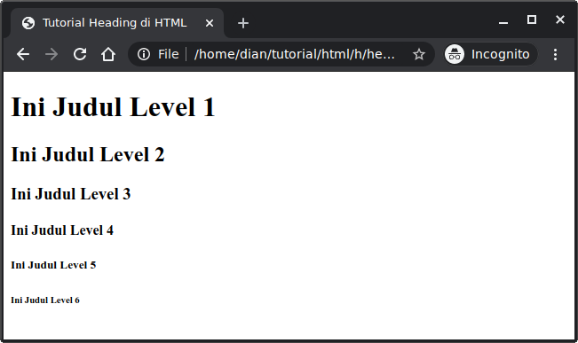

1. Pengertian Heading
Heading adalah elemen HTML yang digunakan untuk menampilkan judul atau subjudul pada sebuah halaman web. Tag ini membantu pengguna memahami bagian-bagian penting dari isi halaman dan membuat struktur konten menjadi lebih jelas. Selain itu, heading juga membantu mesin pencari (seperti Google) mengenali bagian-bagian utama dari halaman, sehingga sangat berpengaruh terhadap SEO (Search Engine Optimization).
Setiap halaman HTML umumnya memiliki satu judul utama yang ditulis dengan tag <h1>, sedangkan bagian-bagian lain yang menjadi subjudul ditulis menggunakan tag <h2>, <h3>, hingga <h6>. Dengan begitu, heading tidak hanya berfungsi sebagai penanda visual, tetapi juga sebagai struktur logis yang menggambarkan urutan isi sebuah halaman web.
2. Jenis-jenis Tag Heading
Dalam HTML terdapat enam jenis heading, yaitu <h1> sampai <h6>.
Berikut contoh penggunaannya:
<!DOCTYPE html>
<html lang="en">
<head>
<title>Belajar HTML #01</title>
</head>
<body>
<h1>Ini Judul Level 1</h1>
<h2>Ini Judul Level 2</h2>
<h3>Ini Judul Level 3</h3>
<h4>Ini Judul Level 4</h4>
<h5>Ini Judul Level 5</h5>
<h6>Ini Judul Level 6</h6>
</body>
</html>
Hasilnya:

| Tag | Fungsi |
|---|---|
| <h1>...</h1> | Judul Utama Halaman |
| <h2>...</h2> | Subjudul Utama |
| <h3>...</h3> | Sub-subjudul |
| <h4>...</h4> | Bagian Lebih Rinci |
| <h5>...</h5> | Subbagian Kecil |
| <h6>...</h6> | Bagian Terkecil |
3. Atribut untuk Heading
Sama seperti elemen HTML lainnya, tag heading dapat memiliki atribut global, yaitu atribut yang bisa digunakan di berbagai elemen HTML untuk memberikan informasi tambahan atau pengaturan khusus.
Beberapa atribut yang sering digunakan pada heading antara lain:
<id>— digunakan untuk memberi identitas unik pada suatu heading. Atribut ini sering digunakan untuk membuat tautan (anchor link) menuju bagian tertentu dari halaman.
Misalnya:<h2 id="pengertian">Pengertian Heading</h2>
Dengan kode tersebut, pengguna bisa membuat tautan ke bagian ini dengan menuliskan
#pengertiandi URL.<class>— digunakan untuk mengelompokkan heading tertentu agar dapat diberikan gaya (style) yang sama menggunakan CSS.
Contohnya:<h1 class="judul-utama">Belajar HTML</h1>
Nantinya class ini bisa digunakan dalam CSS untuk mengatur tampilan semua elemen yang memiliki class
#judul-utama.<style>— digunakan untuk memberikan gaya secara langsung pada heading menggunakan CSS.
Misalnya:<h3 style="color: blue; text-transform: uppercase;">Contoh Heading</h3>
Heading tersebut akan muncul dengan teks berwarna biru dan huruf kapital semua.
Selain atribut di atas, heading juga bisa menggunakan atribut global lain seperti <title>, <lang>, atau <dir> untuk menambahkan informasi tambahan pada teks heading.
4. Mengatur Tampilan Heading
Secara bawaan, browser sudah memberikan ukuran dan ketebalan font yang berbeda untuk tiap heading. Namun, tampilan heading bisa diubah agar lebih menarik dengan menggunakan CSS. Misalnya, kita bisa mengganti warna, jenis huruf, ukuran font, atau memberi latar belakang. Contohnya:
<h1 style="color: white; background-color: navy; padding: 10px;">
Belajar Tag Heading di HTML
</h1>
Kode di atas akan menghasilkan heading berwarna putih dengan latar biru tua dan jarak di sekeliling teks (padding) sebesar 10 piksel. Selain itu, heading juga bisa digabungkan dengan elemen lain seperti <hr> untuk membuat garis pemisah di bawah judul agar tampilan lebih rapi.